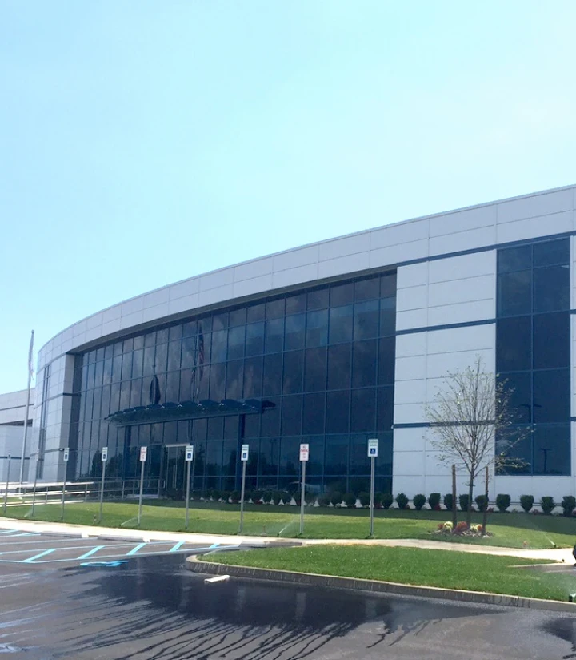
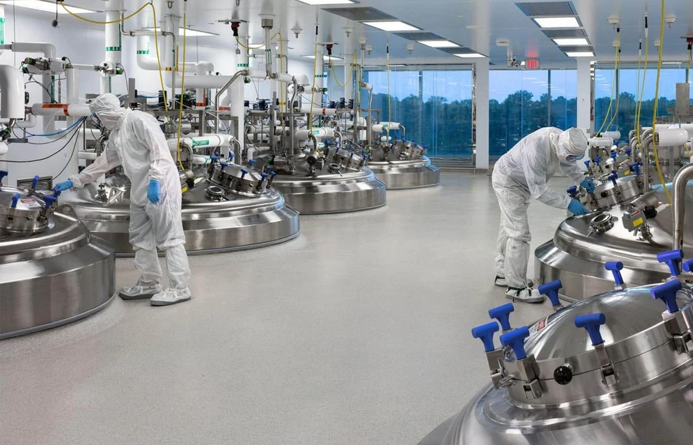
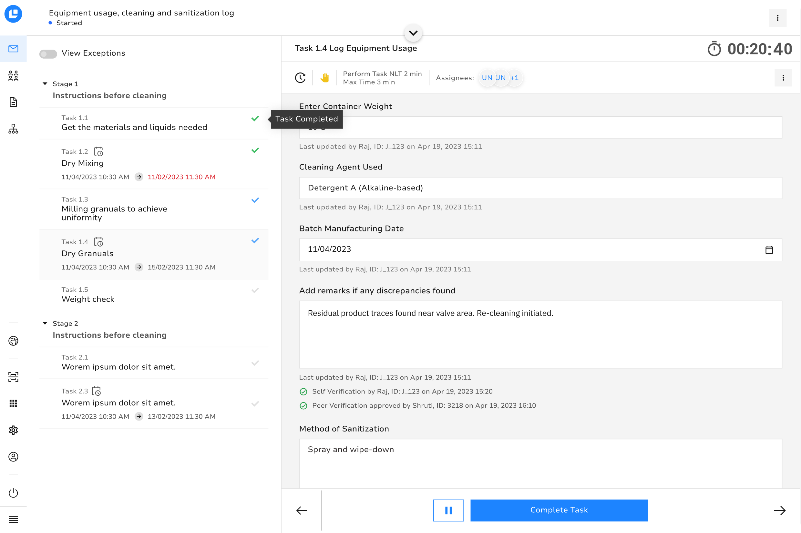
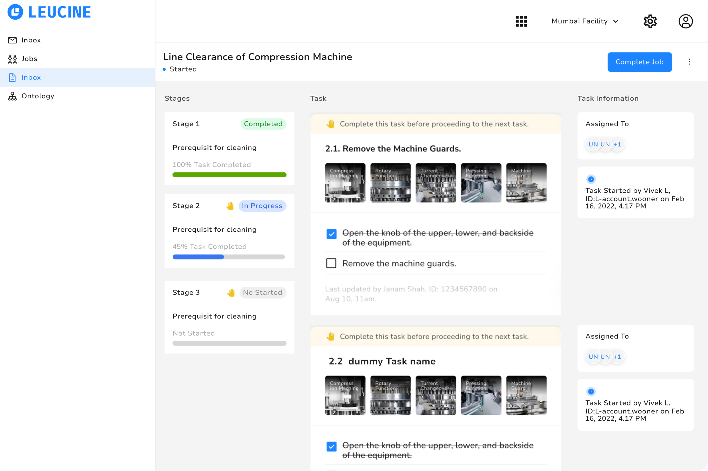
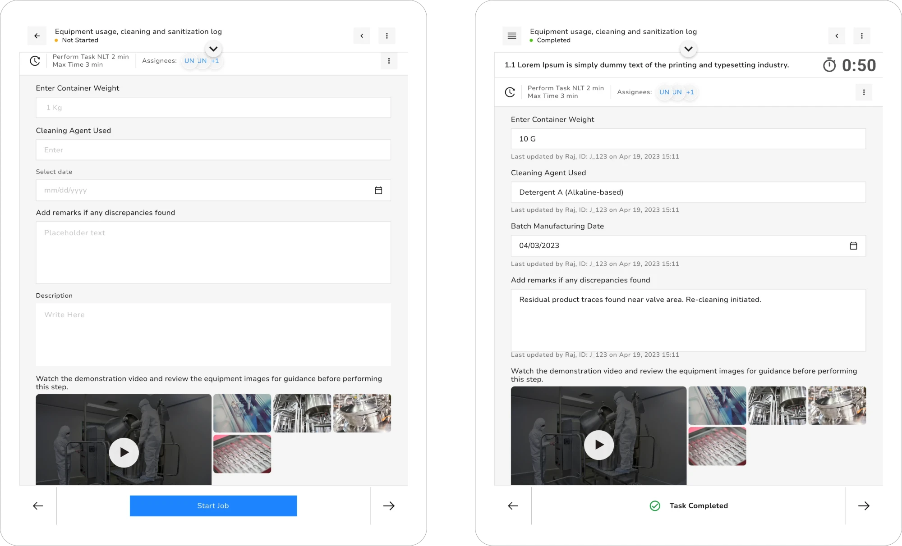

About 4 min read
Leucine
Making factory software that works on the factory floor.
- Role
- Product Designer
- Timeline
- 2022–2024
- Industry
- Pharma: digitization for medicine manufacturers
The short version
The problem
Medicine manufacturers follow strict SOPs (standard operating procedures) for every batch, and Leucine’s app guides workers through them while recording every action for compliance. The first version worked, but it had real gaps:
- Workers didn’t get the information they needed while doing a task
- Approvals and audit records were handled in pieces
- The structure had no room for what clients needed next
I joined as the second designer and ended up owning the redesign.
What I did
I mapped the whole journey:
- Doing a task
- Getting it approved
- Producing the audit report
and restructured how SOPs work in the app so each step shows what the worker needs. That covered:
- Supervisor sign-offs inside the app
- A tablet-first screen
- Room for scheduling and automation
I also rebuilt the design system into one source of truth for the team.
What happened
Engineers stopped losing several hours a week to tablet bugs.
Nearly every client moved to the new version.
New client sign-ups grew about 40% in six months, and my prototypes were part of the sales demos.
First, a little background
In pharma manufacturing, every batch is made by following an SOP: a standard operating procedure that sets out each step, who does it, and what must be checked. Leucine’s app walks workers through those steps and records what they enter along the way.
Those records matter a lot. They form the audit trail regulators review, and a medicine can only be released to market once the company gets approval based on these reports. So a missed step or a gap in the record can hold back an entire batch, which makes it far more than a usability problem.
When I joined, the first version was already working. It just wasn’t ready for bigger clients, or for the SOP automation we wanted to build next.
I went to the factories
Support messages kept saying things like “it doesn’t work properly on my tablet” and “I can’t see all my data.” That told me something was wrong, but not why.
So I visited the plants and watched people work, and the cause was easy to see. Workers were on their feet, wearing gloves, tapping on tablets. Our screens had small buttons and dense tables made for a mouse. People kept stopping mid-task because the information they needed wasn’t in front of them. And when something unexpected happened, the app gave them no way to record it.


Three things I changed
Sign-offs inside the app
Sometimes a worker can’t follow an SOP step exactly as written. Before, sorting that out happened outside the app, which left a gap in the record. I designed a simple flow: the worker raises a request, and a supervisor reviews it, leaves a comment, and approves or rejects it with a reason and a digital signature.
Every exception now has a clear record of who decided what and why, ready for an audit. Of everything I designed here, this is the one I’m proudest of.
A new main screen, even though not everyone wanted it
I rebuilt the screen where workers do their tasks, so it shows the current step, what comes next, and the information that step needs.
Our product managers were worried. Existing customers were used to the old screen, and a big change might frustrate them. They had a point. But the old layout had no room for what bigger clients were asking for, or for the automation we had planned. So I argued for the change, and we made it easier on customers by releasing it in small pieces over several updates. They adopted it without trouble.


Built for tablets, not shrunk to fit them
Instead of squeezing the desktop design onto a smaller screen, I designed for the real situation: bigger buttons, less clutter, and layouts you can use with one gloved hand while standing.

A few other things
A personal inbox
So each person sees what’s waiting for them instead of digging through emails and lists.
A shared design library
I kept it up to date and filled in the missing components and variants. As Leucine grew from two products to many, it became the one source of truth for designers and engineers, so handoffs took less time and development moved faster.
What changed
-
Zero
Engineers used to spend several hours every week fixing tablet problems. That dropped to zero.
-
More
Nearly every client moved to the new version, and it spread to more factories across India, the US and Europe.
-
About 40%
New client sign-ups grew about 40% in six months, a number our product team shared with me. Sales used my prototypes in their demos.
What I’d do differently
We had no analytics tools back then, so I judged success by watching people use the product and listening to clients. Today I’d set up measurement before changing anything, so I could show the before and after in numbers.